All algorithms involve processing input data to generate a new set of data as output. Data is stored in well-defined structures to help access and manipulate efficiently. Understanding these structures is the key for successful algorithmic designs. This chapter includes an in-depth review of the basic data structures in Grasshopper.
2.1 Overview
Overview of data structures in Grasshopper
Grasshopper has three distinct data structures: single item, list of items and tree of items. GH components execute differently based on input data structures, and hence it is essential to be fully aware of the data structure before using. There are tools in GH to help identify the data structure. Those are Panel and Param Viewer.
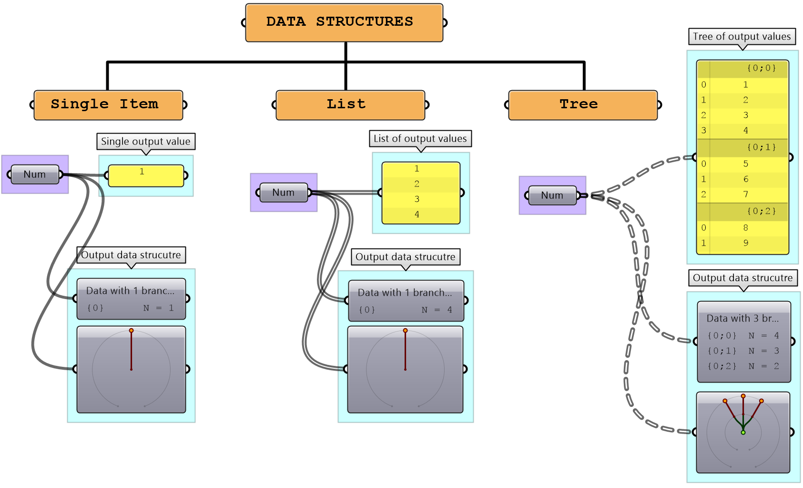
Processes in GH execute differently based on the data structure. For example, the Mass Addition component adds all the numbers in a list and produces a single number, but when operating on a tree, it produces a list of numbers representing the sum of each branch.
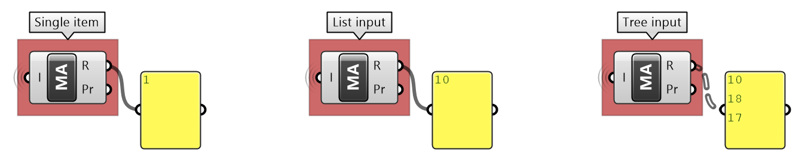
The wires connecting the data with components in GH offer additional visual reference to the data structure. The wire from a single item is a simple line, while the wire connecting a list is drawn as a double line. A wire output from a tree data structure is a dashed double line. This is very useful to quickly identify the structure of your data.
| Display the data structure | Example |
|---|---|
|
Item: single branch with single item Wire display: single line |
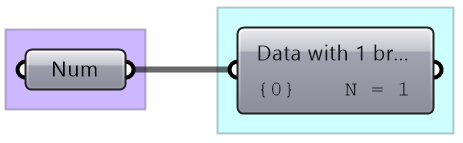 |
|
List: single branch with multiple items Wire display: double line |
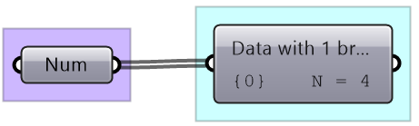 |
|
Tree: multiple branches with any number of items per branch Wire display: double dashed line |
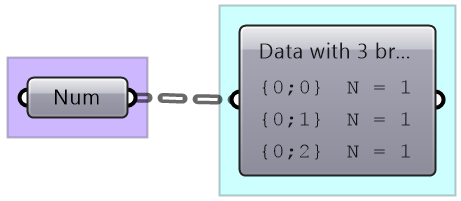 |
2.2 Generating lists
There are many ways to generate lists of data in GH. So far we have seen how to directly embed a list of values inside a parameter or a panel (with multiline data). There are also special components to generate lists. For example, to generate a list of numbers, there are three key components: Range, Series and Random. Lists can be the output of some components such as Divide curve (the output includes lists of points, tangents and parameters). Use the Panel component to preview the values in a list and Parameter Viewer to examine the data structures.
|
The Range component creates equally spaced range of numbers between a min and max values (called domain) and a number of steps (the number of values in the resulting list is equal to the number of steps plus one).
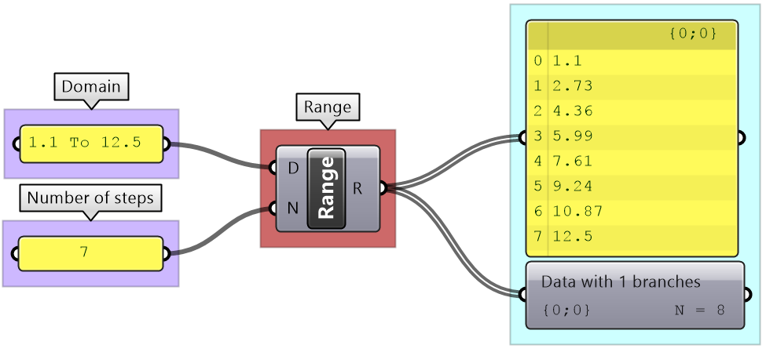 |
|
The Series component also creates an equally spaced list of numbers, but here you set the starting number, step size and number of elements.
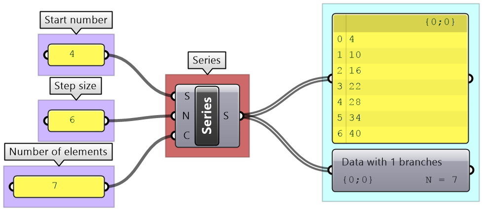 |
|
The Random component is used to create random numbers using a domain and a number of elements. If you use the same seed, then you always get the same set of random numbers.
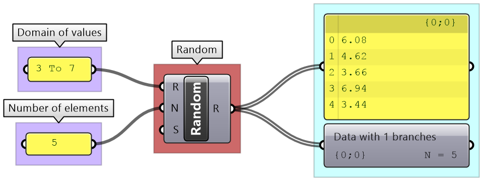 |
|
The Divide component outputs divide points, tangents and parameters on curve.
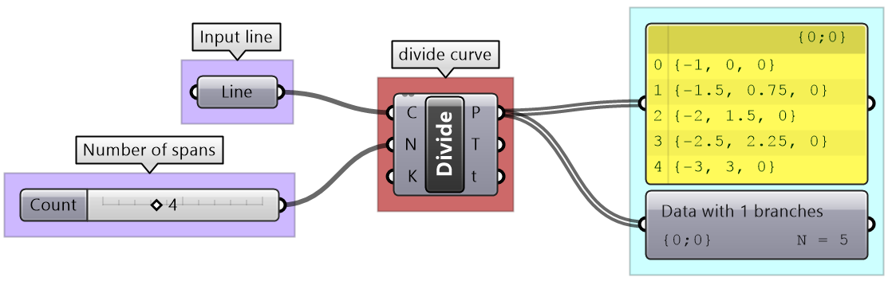 |
| Tutorial: 2_2_1 Generating lists | ||||
|---|---|---|---|---|
| Explore 4 different ways to create circles. Use different data sources and data structures. | ||||
Solution...
|
2.3 List operations
Grasshopper offers an extensive list of components for list operations and list management. We will review the most commonly used ones.
|
You can check the length of a list using the List Length component, and access items at specific indices using the List Item component.
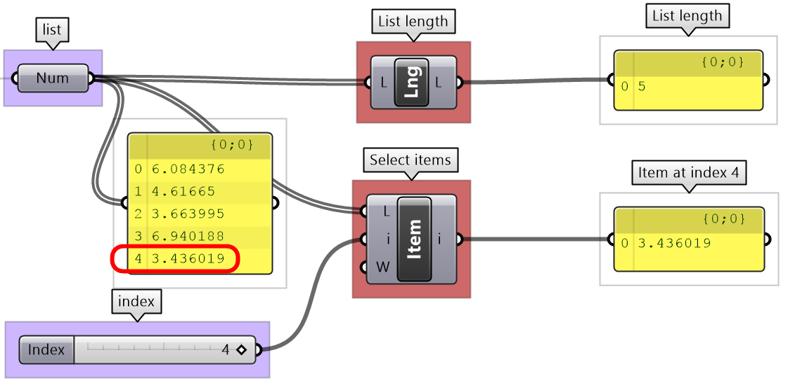 |
|
Lists can be reversed using the Reverse List component, and sorted using the Sort List component.
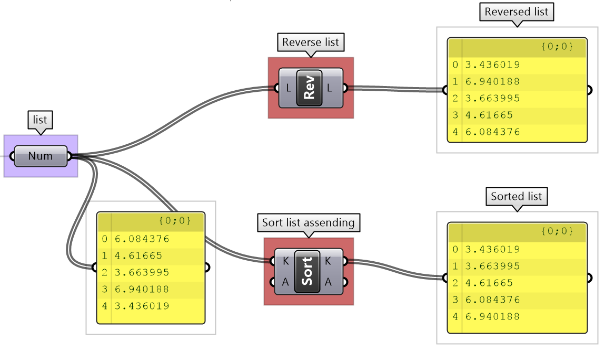 |
|
Components such as Cull Patterns and Dispatch allow selecting a subset of the list, or splitting the list based on a pattern.These components are very commonly used to control data flow and select a subset of the data.
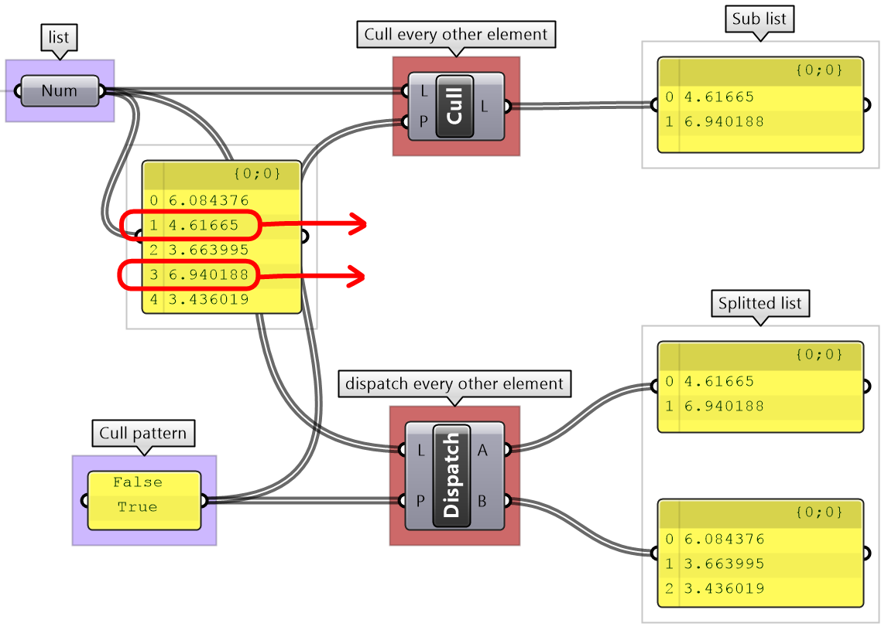 |
|
The Shift List component allows shifting a list by any number of steps. That helps align multiple lists to match in a particular order.
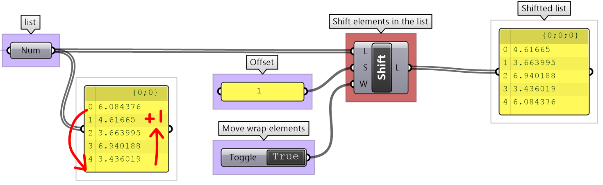 |
|
The Subset component is another example to select part of a list based on a range of indices.
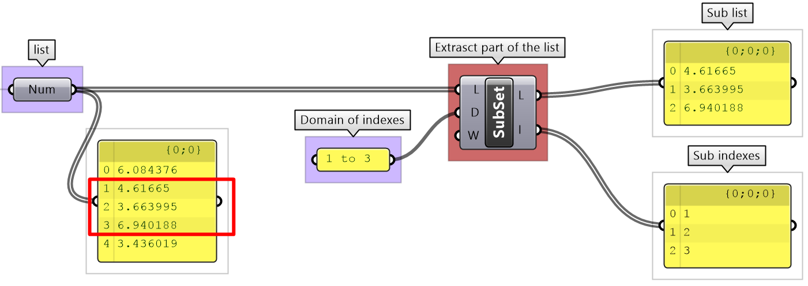 |
| Tutorial: 2_3_1 List operations | |||||||||||||||||||
|---|---|---|---|---|---|---|---|---|---|---|---|---|---|---|---|---|---|---|---|
|
Given two lists of points from dividing two concentric circles, generate the following patterns:
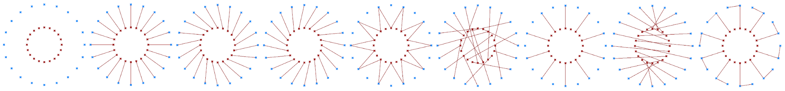 |
|||||||||||||||||||
Solution...
|
2.4 List matching
When the input is a single item or has an equal number of elements in a simple list, it is easy to imagine how the data is matched. The matching is based on corresponding indices. Let’s use the Addition component to examine list matching in GH. Note that the same principles apply to all other Grasshopper components.
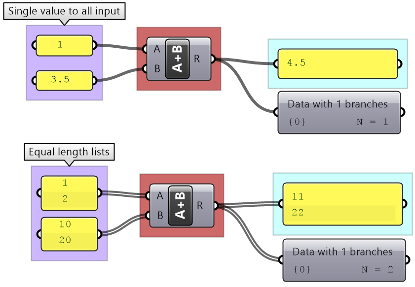
There are times when input has variable length lists. In this case, GH reuses the last item on the shorter list and matches it with the next items in the longer list.
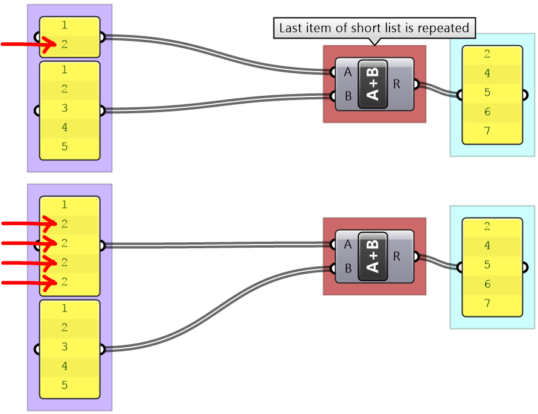
Grasshopper offers alternative ways of data matching: Long, Short and Cross reference that the user can force to use. The Long matching is the same as the default matching. That is, the last element of the shorter list is repeated to create a matching length.
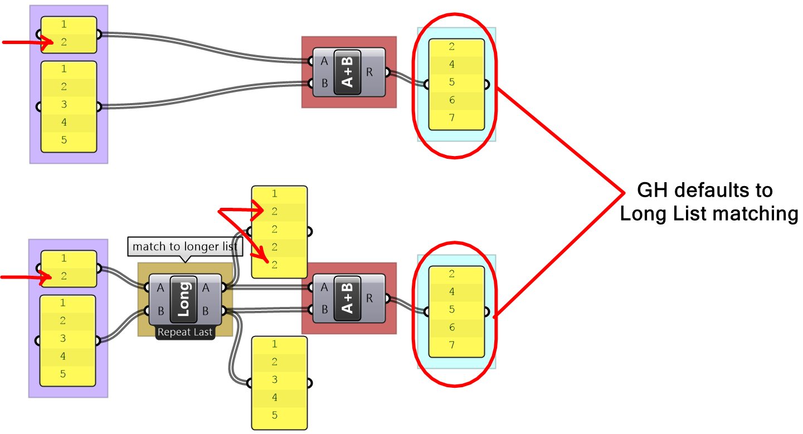
The Short list matching truncates the long list to match the length of the short list. All additional elements are ignored and the resulting list has a length that matches the shorter list.
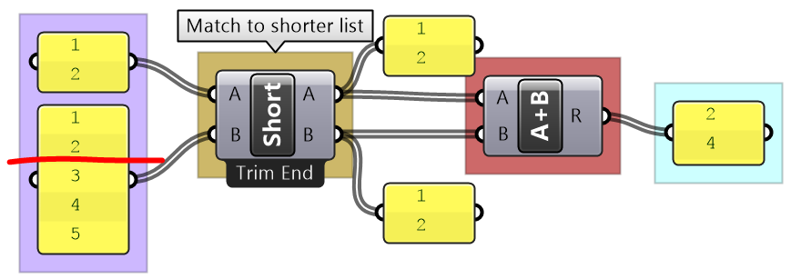
The Cross Reference matches the first list with each of the elements in the second list. The resulting list has a length equal to the multiplication product of the length of input lists. Cross reference is useful when trying to produce all possible combinations of input data. The order of input affects the order of the result as shown in Figure (49).
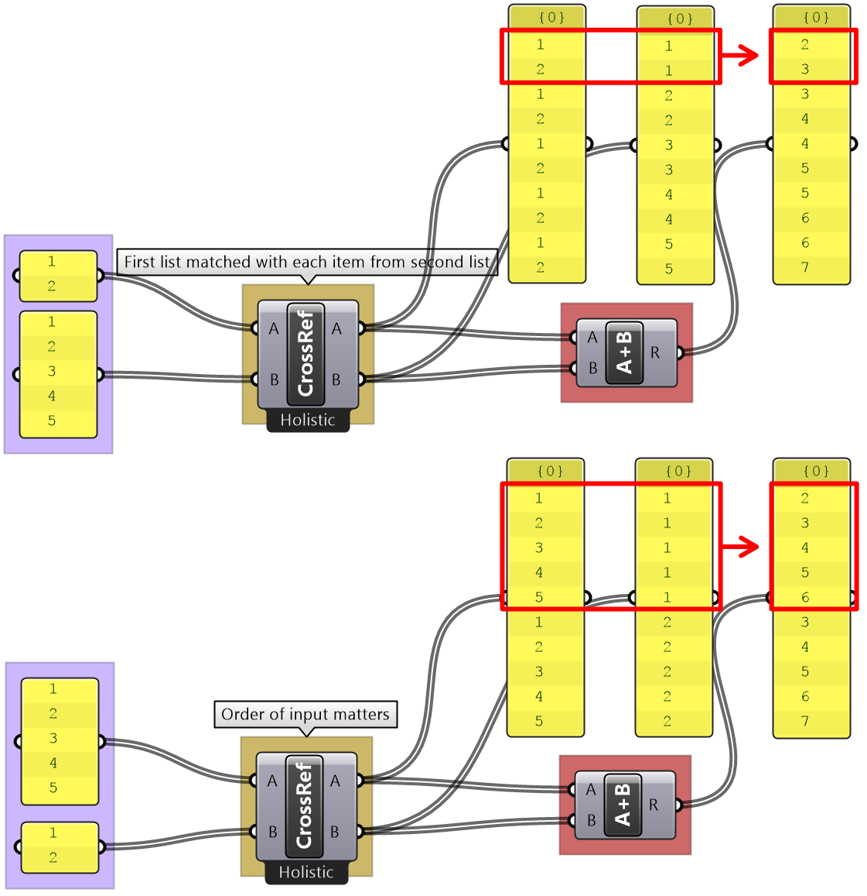
If none of the matching methods produce the desired result, you can explicitly adjust the lists to match in length based on your requirements. For example, if you like to repeat the shorter list until it matches the length of the longer list, then you’ll need to create the logic to achieve that as in the following example.
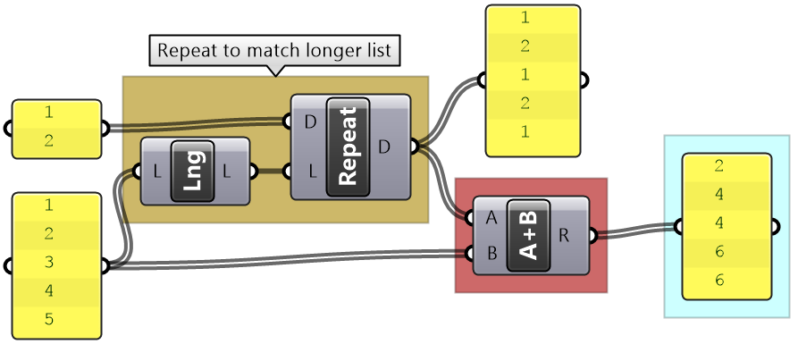
| Tutorial 2_4_1 List matching | ||||||||
|---|---|---|---|---|---|---|---|---|
|
Use the 4-step method to generate an algorithm that takes 6 numbers (0 to 5) and turn them into a cube of points as in the image: 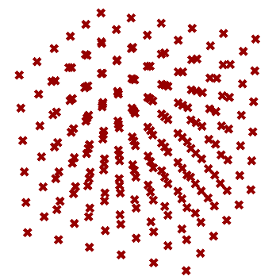 |
||||||||
Solution...
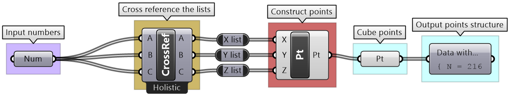 |
2.5 Tutorials: data structures
| Tutorial 2.5.1: Variable thickness pipe | ||||||||||||
|---|---|---|---|---|---|---|---|---|---|---|---|---|
|
Use the 4-step method to create a surface similar to the one in the image: 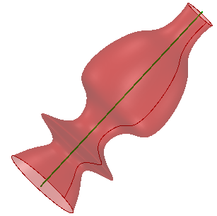 |
||||||||||||
Solution...download GH file... Solution video... Algorithm Analysis: We can think of two different ways to generate this surface: 1. Loft circles created along a line at random locations with random radii 2. Create a profile curve at the circles start points, and Revolve around the line
|
| Tutorial 2.5.2: Custom list matching | ||||
|---|---|---|---|---|
| Given the following three lists of numbers: [1, 2], [10, 20, 30] and [0.2, 0.4, 0.6, 0.9, 1], explain the default GH list matching when they are used as input. Compare the default matching with the Grasshopper Shortest List matching. Finally, use the original lists to create custom matching that repeats the pattern in the shorter lists to create a periodic matching until it matches the length of the longest list. For example [1,2] becomes [1,2,1,2,1]. | ||||
Solution...download GH file...
|
| Tutorial 2.5.3: Simple truss | ||||||||||||||||||||||||
|---|---|---|---|---|---|---|---|---|---|---|---|---|---|---|---|---|---|---|---|---|---|---|---|---|
|
Use the 4-step method to generate a simple truss as in the image. Use the given input for the baseline (base of the truss), height, number of runs (or spans), and the radius of the joint. |
||||||||||||||||||||||||
Solution...download GH file... Solution video...
|
| Tutorial 2.5.4: Pearl necklace | ||||||||||||||||
|---|---|---|---|---|---|---|---|---|---|---|---|---|---|---|---|---|
|
Create a necklace with one big pearl in the middle, and gradually smaller size pearls towards the ends as in the image. The number of pearls is between 15-25. |
||||||||||||||||
Solution...download GH file...
|
Next Steps
Those are the introduction to data structures. Next, learn Advanced Data Structures.
This is part 2-3 of the Essential Algorithms and Data Structures for Grasshopper.